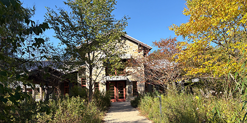

Welcome to the Schlitz Audubon Nature Center

Plan Your Visit
The Schlitz Audubon Nature Center offers six miles of trails that take visitors through 185 acres of forests, wetlands, restored prairies, ravines, bluffs, and Lake Michigan shoreline. Located in Milwaukee, Wisconsin, our mission is to conserve our land’s diverse habitats on Lake Michigan and provide meaningful experiences and environmental education for all.
The trails are open from 8:30 A.M. to 5:00 P.M. daily. Please register at the Welcome Booth when you arrive. Admission fees are paid when you arrive if needed.